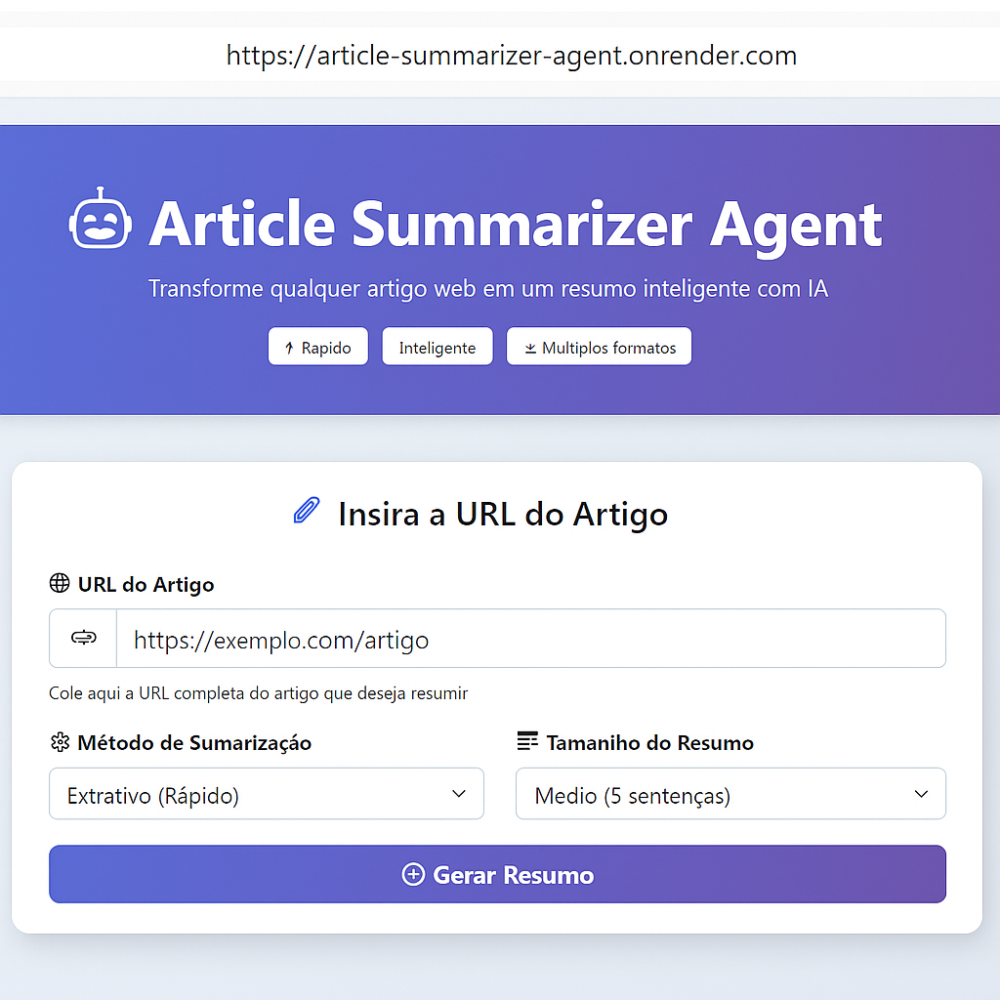

Projetos
Explore minha jornada de desenvolvimento através destes projetos que demonstram diferentes tecnologias e arquiteturas





Desenvolvedor Fullstack | C# .NET | React | Node.js
APIs REST | Cloud & DevOps | CI/CD
Clean Architecture | Testes | Observabilidade | Segurança
Construo soluções robustas e escaláveis com foco em Clean Architecture, testes automatizados, deploy, observabilidade e segurança.
Construo soluções robustas e escaláveis com .NET e React.
Sou um desenvolvedor Fullstack apaixonado por construir sistemas robustos e escaláveis.
Com uma base sólida em Ciência da Computação e experiência prática em ambientes corporativos, foco em entregar valor através de Clean Architecture, testes automatizados e boas práticas.
Transformo requisitos complexos em soluções eficientes, sempre priorizando performance, segurança e uma excelente experiência para o usuário.
Dev Fullstack focado em sistemas robustos. Uso Clean Architecture para criar soluções eficientes e de alta performance.
Explore minha jornada de desenvolvimento através destes projetos que demonstram diferentes tecnologias e arquiteturas
Analista de Suporte de TI
Azure, Windows, Linux, SQL Server, MySQL
Responsável pelo atendimento e registro de chamados técnicos (Nível 1 e 2), garantindo a continuidade das operações de TI. Encarregado do diagnóstico e resolução de problemas de hardware e software, assegurando a eficiência operacional. Realiza a instalação, configuração e manutenção de aplicativos, sistemas operacionais (Windows, Linux) e periféricos. Presta suporte à infraestrutura de redes, computadores e impressoras, além de otimizar processos internos através de suporte técnico proativo.
Formação para Programação
Na Alura, estou seguindo as principais formações no assunto Full-stack, tendo a oportunidade de aprender sobre programação, construção e desenvolvimento de software.
Ciência da Computação
Atualmente, estou cursando Ciência da Computação na Universidade Veiga de Almeida, onde tenho a oportunidade de aprimorar minhas habilidades e conhecimentos em programação desenvolvendo software e projetos para trabalhos escolares.
Desenvolvedor Fullstack
C#,.NET Core, React, Node.js, PHP, Laravel, TypeScript e JavaScript
Responsável pelo desenvolvimento fullstack de aplicações web e APIs RESTful utilizando C#, .NET Core, React, Node.js, PHP, Laravel, TypeScript e JavaScript. Experiência em modelagem e otimização de bancos de dados relacionais (SQL Server, MySQL) e NoSQL (MongoDB). Implementa princípios SOLID, Clean Architecture e Design Patterns para garantir código limpo e manutenível. Desenvolve testes automatizados (unitários e de integração) com xUnit e PHPUnit. Atua em todo o ciclo de vida do desenvolvimento: análise de requisitos, design, desenvolvimento, testes e deploy, utilizando metodologias ágeis (Scrum/Kanban) e versionamento com Git.
C#/.NET (ASP.NET Core, EF Core), Node.js (Express), APIs REST, JWT, Clean Architecture
React, Next.js, TypeScript, Tailwind, shadcn/ui
PostgreSQL, SQL, Prisma, Supabase (RLS)
AWS, Docker, CI/CD (GitHub Actions), Observabilidade
Testes unitários/integração, Health Checks, Performance & Security